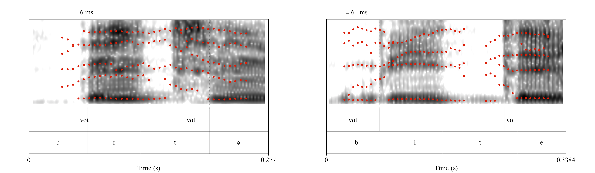
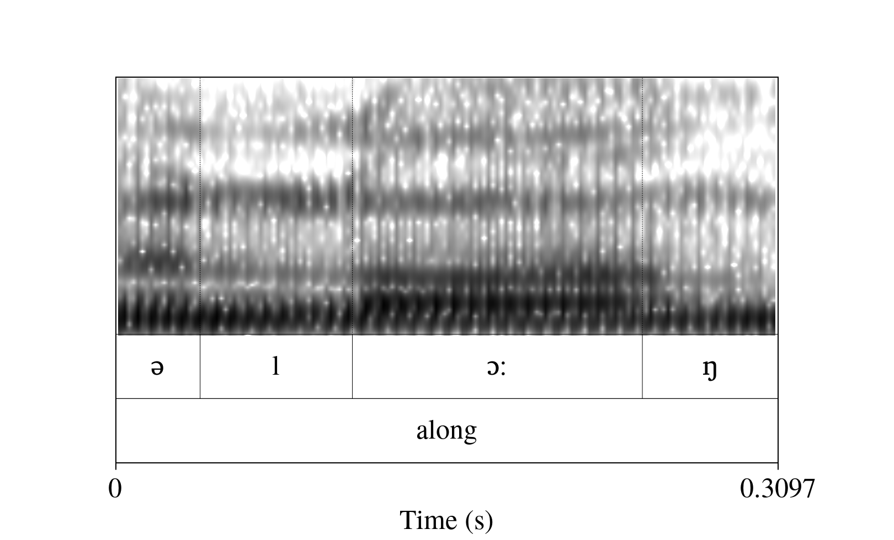
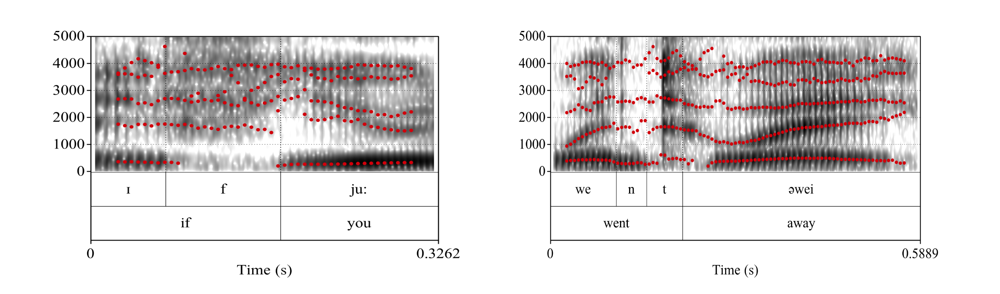

Let’s recall that a plosive is a consonant made by a momentary closure of the articulators (e.g. lips, or the tongue against the palate),followed by a sudden release of the air. We can look at a plosive in the spectrogram and analyze them in different ways:
By measuring the duration of the Voice Onset Time (VOT): this is, the time between the burst (which looks like a dark vertical bar after a white, silence zone; this is called an explosion bar) and the moment in which the vocal folds start vibrating for the next vowel. Regarding VOT, we can expect the following possibilities:
Positive VOT: This is found in voiceless plosives [p t k]. Languages with aspiration (such as German or English) have long VOT values that may reach about 80 ms and are quite easy to spot in the spectrogram. Voiceless plosives in languages without aspiration (such as Spanish, Italian, or French) have much shorter VOT values, of around 20 ms.
Fig. 1: VOT of /k/ in the word Käse: German speaker (left) and Spanish speaker.
0 VOT: In languages with aspiration, a voiced plosive [b d g] has either very short VOT values (close to 0) or simply a VOT of 0 ms.
Negative VOT: Voiced plosives in languages without aspiration usually have negative VOT: that is, the vocal folds start vibrating before the burst.

Fig. 2: VOT of /b/ and /t/ in the word Bitte: German speaker (left) and Spanish speaker.
By looking at the formant movement: we distinguish the place of articulation by looking at the movement of F2 and F3, from the burst to the following vowel. The starting point is what we are particularly interested in; we will call it locus. Note that in voiceless plosives the formants go THROUGH the aspiration!
Bilabials: Since lip closure causes a lowering of all formants, the formants
corresponding to the following vowel will start at a lower point.
Alveolars: alveolars have very little influence on vowel formants, therefore you can expect little movement.
Velars: these are easy to spot as F2 and F3 usually depart from the same part (i.e.the so-called velar pinch).
The pictures above correspond to the LeaP corpus (Gut 2009), which has recordings of native and nonnative speakers of English and German. Look at the differences in the VOT of [k], [t], and [g] between the native speaker of German (left pictures) and the native speaker of Spanish (right pictures): voiceless plosives [k] and [t] are consistently shorter in the speaker of Spanish. Likewise, the voiced plosive [b] shows negative VOT in the Spanish speaker: the voicing bar at the bottom of the spectrogram before the burst is much longer.
2 Nasals
Nasals are easy to identify as there is an abrupt change in the spectrogram: you will be able to see one formant at a low frequency (say, 250 Hz), and an empty spot above it, with no energy. A second formant can be seen, though rather faint, at about 2000 Hz. Similar to plosives, you can tell the place of articulation of a nasal by looking at the following vowel: its formants will lower if a bilabial nasal comes, or will show the velar pinch if it’s a velar nasal. The image below shows how nasals [m], [ɲ], and [n] in the word mañana look in the spectrogram.
Fig. 3: Nasals [m], [ɲ], and [n] in the Spanish word mañana.
3 Fricatives
Fricatives look like little black clouds of aperiodic energy. They can be distinguished in two ways:
Intensity: fricatives have different intensities: [f] and [θ] look very faint in the
spectrogram, but sibilants are a lot more intense.
Center of gravity (COG): A good way of measuring fricatives is by dividing the spectrum in two, so that you have the same amount of energy in both halves (sort of like a median in terms of amplitudes). This, plus a measure of the dispersion (i.e. whether the energy distributes more or less evenly across the spectrum, or if it stays close to the COG) is how we know which fricative we are looking at. This usually requires an adjustment of the spectrogram settings so that the highest frequency to show is around 8000 Hz. Measuring COG involves creating a Praat Object called Spectrum and then
using a smoothing function as well, which we will see in section 6.3. Here is a spectrogram of the German word verschwindest, with fricatives [f], [ʃ], [v], and [s].
Fig. 4: Fricatives in the German word verschwindest.
4 Taps and trills
Taps look essentially like a voiced plosive (i.e. a dark vertical bar), although the bar is crossed by formants. Trills, on the other hand, are easy to observe since they show a sequence of 3 little vertical bars, one followed by the other.
Fig. 5: A tap (left) and a trill, in Spanish words pero (left) and perro.
5 Approximants
Approximants are wery vowel-like sounds, both articulatorily and acoustically. We will distinguish between laterals, English [r], and glides.
Laterals: they have a clear formant below, akin to nasals, although usually a bit more faint. Formants F2 and F3 are around about 1500 and 3000 Hz.

Fig. 6: A "clear-l" (alveolar lateral) in the English word along.
The approximant [r] shows a sudden drop in F2 and F3, for which again looking into
vowel formants from vowels before the sound in question are the best way to recognize them.
Fig. 7: An approximant /r/ in the English sequence I really. Note how F2 and F3 show a sudden drop.
Finally, glides are very similar to vowels as they have formants, though they usually look a bit more faint (less energy). On a spectrogram they can be seen as a pure trajectory of formants: depending on the vowel that they come from/go to, you will see formants with either a raising or a falling slope. Below we can see the continuous transition from the high F2 of [j] to a much lower F2 in [u] (Fig 7, left), while the transition form [w] to [e] causes a continuous increase in F2.

Fig. 8: Glides: [j] in the sequence if you and [w] in the sequence went away.
6 Measuring consonants
6.1 Exercise 1: VOT (and time dimension in general)
First, download the sound tigermouse2.wav from this link and its corresponding TextGrid from this other link here and open them with Praat (you can do this manually, since it's just two files).
Let's inspect these files. Select both files together and go to View and Edit. You should see something like this:
Fig. 9: When you select both a Sound and a TextGrid object together, you can see and edit the TextGrid.
This TextGrid has three tiers: the first is called words, the second phone, and the third VOT. This sentence has only three plosives: the /t/ and /g/ in tiger, and the /t/ in to. However, and upon closer inspection of the Textgrid, the /g/ does not have an explosion bar, which suggests that this was actually produced as a fricative sound.
Now we measure both VOTs with the following script:
selectObject: "Sound tigermouse2"
plusObject: "TextGrid tigermouse2"
appendInfoLine: "sound", tab$, "start", tab$, "end", tab$,"VOT"
Extract intervals where: 3, "yes", "starts with", "VOT"
n = numberOfSelected ("Sound")
for i to n
sound [i] = selected ("Sound", i)
endfor
for i to n
selectObject: sound [i]
start= Get start time
end= Get end time
vot = Get total duration
appendInfoLine: i, tab$, start, tab$, end, tab$, vot
endfor
Note that lines 1 and 2 are selecting two elements together: Sound tigermouse2 and TextGrid tigermouse2. We are doing this because we will extract parts from the Sound tigermouse2 by taking the time stamps on the TextGrid as reference points.
The third line is an appendInfoLine that prints the column names of a table that the script will start filling up as we go through the for loop at the end. The column names are Sound, start, end, and VOT. They are separated by a tab, which can be scripted as a string variable: tab$.
Line 4 performs the extraction: it will take all the intervals marked on Tier 3 of the TextGrid with the label VOT. This will create a bunch of Sound objects, which will be queried along the time dimension (i.e. we will only look at durations; we won't be measuring formant values or anything else).
Now note that we have two for loops. Since the Extract intervals function finishes with all the extracted sounds selected at once (you may just run the first 4 lines of the script to see what I mean), we will take advantage of that and we will run a for loop that gives the selected sounds a name, i.e. Sound [1] and Sound [2]. After that, we run a second for loop that iterates through the selected sounds.
Measuring along the time dimension is rather simple: we mostly use the functions Get start time, Getend time, and Get total duration, which take no arguments. After the query, we add an info line with the sound name and the start, end, and total duration. Since this action is inside the loop, it will repeat for each one of the sounds in the vector.
6.2 Exercise 2: Formants in consonants
Let’s try this script:
selectObject: "Sound tigermouse2"
plusObject: "TextGrid tigermouse2"
appendInfoLine: "sound", tab$, "F1", tab$, "F2", tab$,"F3"
Extract intervals where: 2, "yes", "matches (regex)", "n|l|m"
n = numberOfSelected ("Sound")
for i to n
sound [i] = selected ("Sound", i)
endfor
for i to n
selectObject: sound [i]
form= To Formant (burg): 0, 5, 5500, 0.025, 50
f1mean= Get mean: 1, 0, 0, "hertz"
f2mean= Get mean: 2, 0, 0, "hertz"
f3mean= Get mean: 3, 0, 0, "hertz"
appendInfoLine: i, tab$, f1mean, tab$, f2mean, tab$, f3mean
endfor
This script gives you the formant values of laterals and nasals, which are stable throughout time;
hence measuring the mean values is ok.
Now look at the script. The Extract intervals where line is now set to the ”matches (regex)” option. This allows you to make searches based on string patterns using regular expressions. A regular expression is a sequence of characters that specifies a search patterns. For instance, you can use a regex to find through a text something like: "all the words that start with a C and end with a D". These are common to many computer languages, so for those of you who are familiar with other programming languages, you can check the Praat manual and notice that most of them will ring a bell. In Praat, the pipe bar stands for ”or”. So basically, here we are telling the script to look for TextGrid intervals on the tier number 2 that are labeled as [n] OR [l] OR [m]. Apart from this, the structure of this script up to line 7 is very similar to the one above.
Now let's look into the second for loop. Line 8 creates a Formant object, just like the one we used in the previous week for measuring vowels. After that, lines 9 to 11 query the Formant object: since F3 is also important when analyzing nasals and laterals, we have three lines of code getting the values for F1, F2, and F3. Finally, line 12 collects the information.
6.3 Exercise 3: COG
Now this script is a bit more complicated as it does various things:
Since fricatives are aperiodic noise, they a bit more tricky to measure. There is a Multiply by window line (which amplifies the sound a bit), and the creation of a Spectrum object. A Spectrum shows the relative amplitudes across frequencies; it's like taking a slice from a spectrogram and looking at which frequencies the sound is more intense. Then, the Cepstral smoothing line will create yet another Spectrum object, but this time we get a more "summarized" version of it.
selectObject: "Sound tigermouse2"
plusObject: "TextGrid tigermouse2"
appendInfoLine: "sound", tab$, "intensity", tab$, "COG", tab$,"dispersion"
Extract intervals where: 2, "yes", "matches (regex)", "^f|^s"
n = numberOfSelected ("Sound")
for i to n
sound [i] = selected ("Sound", i)
endfor
for i to n
selectObject: sound [i]
int = Get intensity (dB)
Multiply by window... Gaussian1
To Spectrum: "no"
Cepstral smoothing: 200
cog = Get centre of gravity: 2
std = Get standard deviation: 2
appendInfoLine: i,tab$, int,tab$,cog, tab$, std
endfor
Now let’s pay attention once more to the Extract intervals where line. It has a little caret
before [f] and [s]. The caret stands for ”beginning of string”. So the search will not take into
account any TextGrid intervals where there might be an f or an s that are NOT at the very
beginning of the string (can you guess why this is necessary? Remove the carets and see what
happens).
PRO TIP: You can use regular expressions in Praat (but beware the backslash)
Since you will be working with string variables most of the time, you will need to constantly tell Praat things like "fetch me all the files in this folder starting with the letter C", or "extract all the TextGrid intervals containing an F but that won't have a M before it", or "Get me all the files with this extension", etc. In many cases, you will be able to use Praat's in-built functions (which can be conveniently found under "String functions" in the Praat Manual).
However, sometimes you might need to use regular expressions (also called regex, which are a series of characters you can use in order to search for patterns in text. They are more or less standard across programming languages and Praat allows for their use; you can find a list of them under "Regular expressions" in the Praat manual. The caret (^) in the script above is one of them and as we saw, it means "the caracter must be at the beginning of the string"; the asterisk or star(*) is another one and means "any (sequence of) character(s)". Now if you want Praat NOT to read a character used in a regex as such, you can escape the character by using a backslash character.
BUT, Praat also uses backslashes for certain IPA symbols; for instance, the symbol for the voiced dental fricative (also called eth, or [ð], is produced with the sequence \dh. So, if you want Praat to use regex AND extract intervals from a TextGrid with IPA characters, you will need to "escape the escape", that is, you will need to tell Praat that the backslash in the phonetic symbol is NOT an escape symbol... with a backslash (that's right, one backslash cancels the other).
#I want to extract intervals with vowels i and \ic (the second stands for the high, front, lax, unrounded vowel).
Extract intervals where: 2, "yes", "matches (regex)", "i|\\ic"
As an exercise, you can find out about using regular expressions on Google. Try for instance, a Google search with the pipe bar (which means OR, as seen in the script above): "cat|dog|raccoon" memes and see what you get.
7 Homework
Download the .zip file tigermouse3 from this link. Unzip it and open the files with Praat (they are a Sound and a TextGrid). Now modify today's first script so that you know which sound from which word you're getting the data from (as you might have already noticed, the script only gives you a number for the sound column). Here are some hints:
Select the TextGrid tigermouse3 object and go to Query > Query interval tier. You will see a couple of possible options, i.e. Get label at time and Get interval label.
Create string variables and numeric variables that allow you to recover that info and put it into the table on the Info window.
Once you're done, create a pdf with the script and the table that you created (remember that you can save the output of the Info window by going to the Menu on that window and go to File > Save as... and save as .csv file.